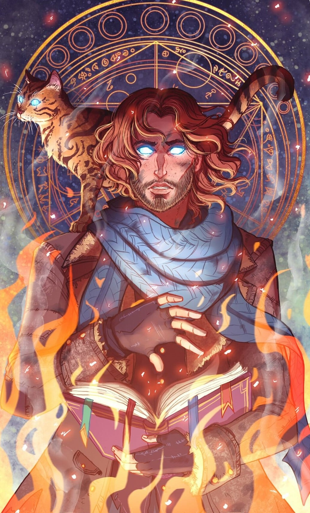
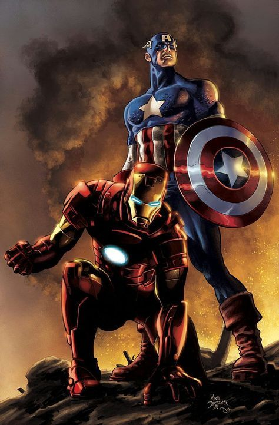
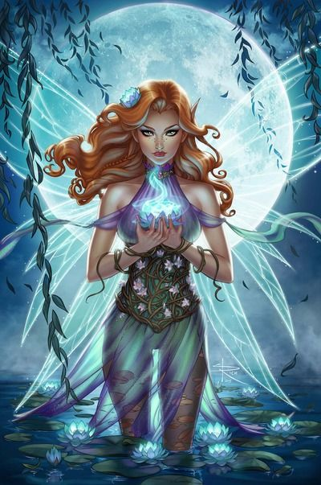

Esse é o mago. Sua missão é achar a Varinha das Varinhas no cofre secreto, para poderem derrotar os inimigos.

Esse é o metahumano. Sua missão é achar a Pedra da Ressureição, para conseguirem reviver, caso algum deles seja ferido.

Essa é a fada. Sua missão é resgatar a Capa da Invisibilidade de um caçador muito antigo, para conseguirem chegar ao local da bomba.